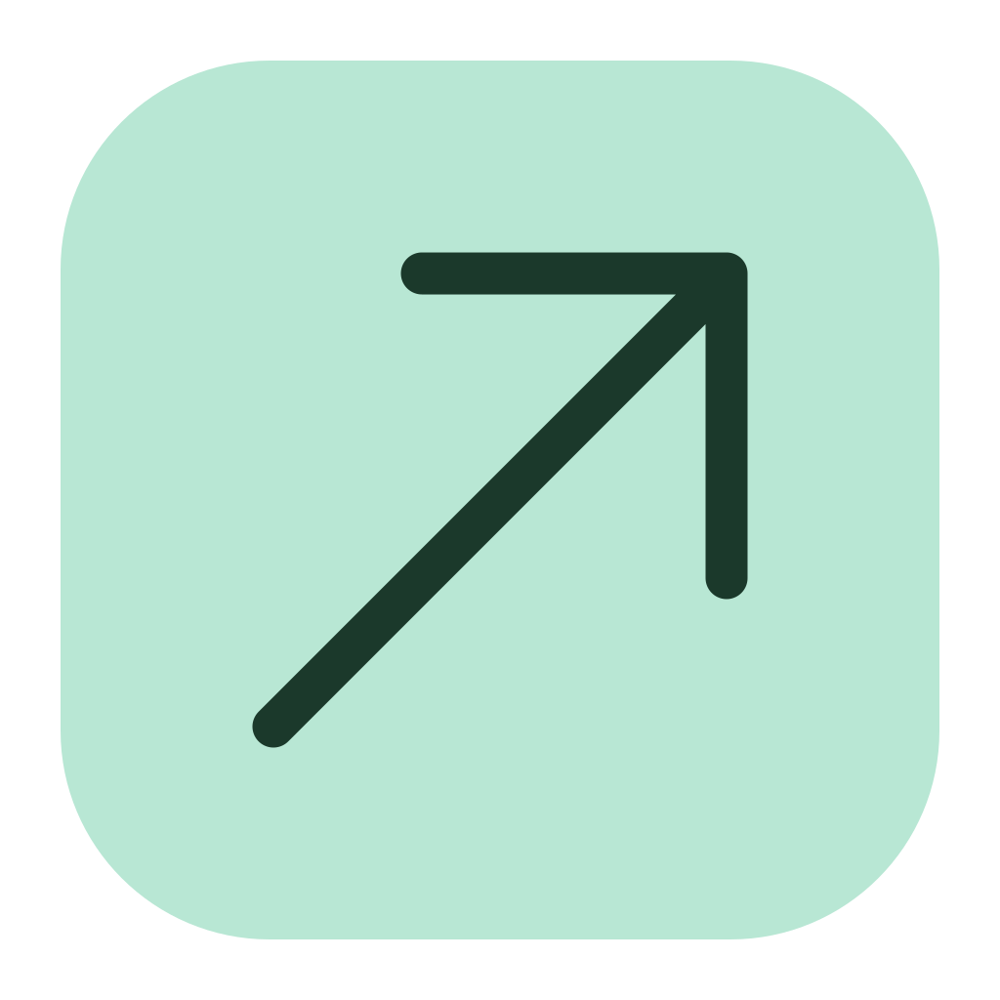

归档统一查看
支持完整分卷、会话与项目 ZIP、原生数据库补充、历史差异、快照和密钥目录。大目录分页显示，未知或缺失项标明原因。

会话迁移AI Session Migration 下载客户端LOCAL HISTORY. NEXT CHAPTER.
讨论过的方案，走过的弯路，还没做完的项目。
把本地 AI 会话与项目资料整理、备份，选择恢复到下一台电脑。
Mac Apple Silicon · Windows x64 · 无需 Python 或命令行
所有本地记录，在一个地方整理
示例项目 · 原目录已关联
示例项目 · 历史已保留
示例项目 · 已归档
切换分组时，保留还没有保存的内容。
建议切换时暂存输入，并提供清晰的保存反馈。
这样可以继续整理界面，而不丢失刚才的工作。
会话库合成示意，沿用原生客户端布局；0.3.0 新增恢复中心。此页面不读取访客电脑资料。
A SMALL MOVE, WITH YOUR HISTORY.
从原电脑到目标电脑，
每一步都看得见。
在原电脑识别本地资料，查看历史与附件，选择需要带走的会话。
识别本机资料通过向导生成加密保全备份和迁移包，单独保存恢复密钥，检查校验结果。
新建备份在恢复中心勾选文件或目录；会话进入原生导入向导，映射项目并查看冲突。
恢复中心先完整备份目标资料并回读校验，在独立副本恢复后发布，保留恢复记录。
备份目标并导入支持完整分卷、会话与项目 ZIP、原生数据库补充、历史差异、快照和密钥目录。大目录分页显示，未知或缺失项标明原因。
按单项、文件夹或整组勾选。整组包含全部分页；原生会话可进入会话库逐条选择导入。
先预览新增、跳过和阻止，完整备份并回读目标。已有文件不覆盖；撤销只处理本次创建且未被用户改动的文件。
图形界面可选择缓存位置，索引空间不足会停止。加密归档认证后按需读取，密钥正文不显示。
读取使用私有快照。源资料不改写，历史中的命令和工具调用只展示，不执行。
同 ID 会话默认跳过。先看冲突，再决定范围，不自动覆盖或合并目标历史。
保留完整目标备份、原目录和恢复日志。支持条件撤销；已有新对话时停止自动恢复。
逐文件核对 SHA-256，加密备份做解密回读。遗漏、失败与待验证项分别显示。
KNOW WHAT COMES WITH YOU.
| 会话来源 | 可查看与保全 | 原生恢复边界 |
|---|---|---|
| CClaude Code | 本地项目日志、工具记录和附件；可用的 Desktop Code 索引。 | 恢复 Code 本地日志；Desktop 索引需选择目标账号的索引目录。普通云端聊天不在此接口范围内。 |
| ⌘Codex | 原生索引、分页历史、可用 rollout、附件与项目关系。 | 目标需先初始化相容数据库。同 ID 跳过；独立 SQLite 目录配置暂不跨目录替换。 |
| DDeepSeek Harness | 原始日志、附件、项目归属、归档与置顶。 | 支持活动 v4 日志与 workspace v2。未知格式明确阻止；显示缓存由原客户端重建。 |
先区分资料恢复与真实续聊。 104 项测试在本地、Linux 和 Windows 通过，两平台打包程序已通过合成资料导入与文件选择恢复检查。Mac 应用资料和数据库可提取为副本，不等于 Windows 原生运行环境或登录已恢复。个人 Windows 资料导入、原客户端显示、跨账号 / 组织 / 供应商兼容及真实续聊，仍需在目标电脑验证。
TAKE THE NEXT CHAPTER WITH YOU.
下载 0.3.0 预览版，双击打开。所有操作都在图形界面中完成。
A FEW THINGS TO KNOW.
遇到不确定的格式或冲突，
先保全资料，再确认下一步。
不需要。客户端内置运行环境。Mac 打开 DMG 中的应用；Windows 完整解压 ZIP，保留 _internal，再双击 AI Session Migration.exe。备份、校验、冲突预览与导入都通过窗口完成。
不会。网站仅介绍软件和提供下载入口，不扫描本机资料，也没有会话上传功能。客户端在本地读取和处理资料；私密备份、附件与恢复密钥由你保管。
在线备份可以保持原客户端运行，但它是按文件和数据库分别取得的快照，不代表跨文件同一时刻。遗漏与来源变化会记录。向目标原客户端导入时，需要先正常退出它及相关后台任务。
会话保全 ASMB 使用加密保护，恢复密钥需单独保存。Windows 会话迁移 ZIP、项目文件 ZIP 和导入/恢复前的目标备份未加密，仍可能包含私密历史、附件或目标机凭据，请保存在私密位置。
可以选择目标自己的资料目录和 Desktop Code 索引容器，工具不搬运源登录材料。资料恢复、原客户端显示与模型是否接受这段历史是不同的检查，跨账号、组织、供应商的真实续聊需要在目标电脑单独验证。
同 ID 会话默认跳过。发布前先完整备份目标目录，并在独立副本恢复和核验。若目标仍与导入结果一致，可以条件撤销；已有新对话时会拒绝自动撤销。异常退出可从“导入记录”打开备份目录中的恢复记录。
恢复中心可勾选项目代码、应用资料和旧版本，恢复为独立文件副本；Mac 专用资料不保证直接用于 Windows。原生会话导入仅映射项目归属，目标工作文件可先通过恢复中心准备。源登录、远程连接、Goals、队列和执行配置不随会话导入；历史命令不执行，原正文和 thinking 保留。